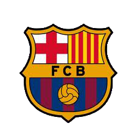

Historia
El Fútbol Club Barcelona (en catalán, Futbol Club Barcelona) es una entidad polideportiva de Barcelona (España). Fue fundado como club de fútbol el 29 de noviembre de 1899.Una de las principales características del F. C. Barcelona es su carácter polideportivo. Se distingue de las demás instituciones deportivas por el hecho de que posee un extenso palmarés a nivel europeo, por el alto nivel de formación de sus jugadores, el potencial económico que maneja, por la calidad de los jugadores y también porque «posee una remarcable cultura del juego y del triunfo».
|
Escudo

|
Titulo |
Cantidad |
| Uefa Champios League |
5 |
| Liga de España |
24 |
| Copa del rey |
29 |
| Mundial de clubes |
3 |
| Supercopa de España |
12 |
| Supercopa de europa |
5 |
|